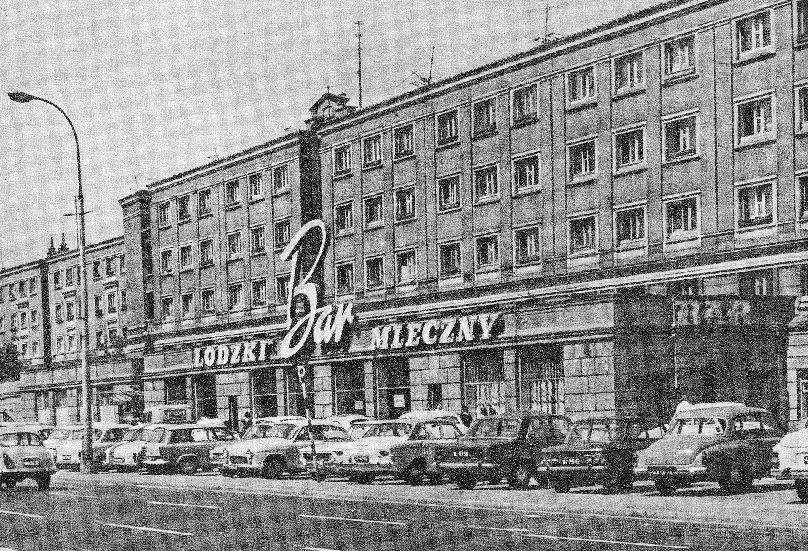

Вторая половина дня у Мамертов характеризовалась в ту субботу неправдоподобно аппетитным запахом дрожжевого пирога и оживлённой дискуссией на тему приключений Томчо в первом классе. Пирог испекла Тося, которая хотя и торунянка по рождению [Торунь - городок на севере, родина Коперника], но вросла в город семьи своего мужа так сильно, что не мыслила себе воскресенья без собственноручно испечённого пирога, несмотря на то что, например, по отношению к субботнему наведению порядка такого энтузиазма не питала. Что до дискуссии - она проходила за кухонным столом, у которого собрались все Мамертовцы вместе с тёткой Лилей, которую приманил с первого этажа запах пирога со сливой.
Томчо, уже шесть дней как ученик 1-б класса, был естественно центром всеобщего интереса к явной зависти Ромчи, которая постоянно вставляла свои три гроша, преувеличенно гримасничая и жестикулируя очень выразительно. Томчо посматривал на неё с внезапно зародившейся снисходительностью с вершин своей школьной зрелости.
– Ну, так рассказывай, как там в школе? - расспрашивала его тётка Лиля, в которой застоявшаяся учительская кровь
в последние шесть дней начала циркулировать несколько живее.
– В порядке, - ответил Томчо.
– В полном, - добавила Ромча, наслаждаясь его беспечностью.
– Ну, всё же расскажи, чем занимались сегодня в классе?
– Ничем, - сообщил Томчо.
– Как это ничем? Совсем ничем?
– Ну да. Учились мы.
– Чему?
– Ничему, - проворчал Томчо. Школа так сильно поглотила его впечатлила его что он попросту не умел о ней рассказать.
– А какова ваша пани? - Томчо просиял. [речь об учительнице младших классов]
– Хорошая. Сегодня она взяла меня за руку.
– Хм? - удивился Мамерт, - А при каких обстоятельствах?
– Коснулась моей руки и сказала: ах, Томчо, ты чего так вспотел...
– А я в классной тройке, - пробормотала Тося.
Ответом ей был горестный вопль Мамерта. Мамерт был противником классных троек. Мамерт не терпел детей, чьи мамуси были в Родительском Комитете. Мамерт в этом вопросе имел наигоршие воспоминания с собственных школьных лет и протестовал категорически против превращения своего сына в лалуся, подхалима и тёплую лапшу.
[Классная тройка - этакий родительский комитет класса, состоящий из председателя, зам-председателя и казначея]
– Но послушай, - хотела объясниться Тося.
– Завтра же выписывайся от них!
– Не могу! Меня уже назначили председательницей. Дети, идите в комнату и закройте двери, потому что мы сейчас
будем ругаться.
Мамерт подождал, пока дети выйдут, после чего разразился:
– К тому же ещё и председательница! Каким чудом вообще тебя угораздило до той тройки? Каким чудом, хотел бы знать?
– Ну, любимый, Томчо был назначен к самой лучшей и самой симпатичной учительнице. Но неведомо почему оказался в
списке последним. И вписан карандашом. А детей в классе сорок. Их надо было переписать начисто. Вот я и взяла на
себя сбор денег за учебники, поскольку остальные мамы не хотели...
– Если бы это было про учебники, - ворчал Мамерт, - Скажи уж лучше сразу, что не можешь расстаться с этим маменькиным
сынком! Классная Тройка! Подлиза! И сразу эффект - пани уже его выделяет, уже за ручку держит!
– Мамерт, ну дай мне сказать. Так вот я переписала ручкой список детей, по алфавиту, и уместила Томча на правильном
месте, под "К".
– О, это умно, - одобрила тётка Лиля.
– К тому же я придумала новаторскую систему сбора взносов. И тогда меня выбрали председательницей. А Мамерт сердится.
– Зря сердишься, Мамерче, - сказала тётка Лиля, поедая пирог со сливами. - Не знаю, известен ли тебе факт, что дети
классной тройки под конец года получают дополнительные баллы.
– Какие ещё баллы?!
– За общественную работу родителей.
– Что?! - возопил Мамерт, - Что за мерзость! А что с теми детьми, родители которых слишком заняты настоящей
общественной работой, чтобы притворяться общественниками? Что с теми детьми, родители которых служат обществу попросту
выполняя свой тяжкий труд?!
– Успокойся, тебе вредно волноваться, - Тося жалела что вообще призналась насчет своей новой функции. - Томчо это
пригодится при поступлении в колледж.
– Так может уж заодно поищи знакомств и в университете! - шипел Мамерт в сильном возбуждении. - Но неужели Томчо не
мог бы позаботиться о себе сам?
Тося предприняла попытку перевести разговор на другую тему.
– Тётя позволит ещё пирога?
– Позволю.
– А чаю?
– Тоже позволю. - Тётка Лиля постучала по столешнице пальцем, напоминая без надобности, - Мамерт, перестань
нервничать, это вредно.
– Нет, ну правда! - заново разнервничался Мамерт.
– Успокойся, любимый, я всё изменю, - увещевала Тося.
– Ха-Ха-Ха. - засмеялся её муж противным голосом. - Что тут вообще можно изменить.
– Ой... всё, ну всё можно! - Можно вернуть общественной работе её благородное звание. Ну, потому что не каждая
общественная работа должна быть притворной. Разве я не могу вместо того чтобы писать отчёты, попросту попытаться
помочь учительнице с организацией в 1-б?
– Ясно, что можешь, - согласилась тётка Лиля. Мамерт фыркнул.
– Не фыркай! - оскорбилась Тося. - Увидишь, я претворю в жизнь демократичные принципы.
– Ты моя бедняжка, людей не знаешь. Конечно другие будут писать отчеты, а ты будешь работать в одиночку. Потому что
другие хотят себя хорошо проявить. А это сделать можно только на письме. Люди знают своё - на честности далеко не
уедешь, вообще честь - это понятие из времен пана Володыйовскего. [вымышленный герой романов Сенкевича, 17 век] -
Мамерт так разошёлся, что поперхнулся чаем, после чего продолжил, оседлав своего конька, - Уже от младшего возраста
целые поколения воспитываются в духе подлизывания и конформизма. Даже ты, ты сама не веришь, что Томчо смог бы
прорваться самостоятельно через всю систему государственного образования. И все повторяют "такая жизнь" и никто не
помнит, что жизнь есть такая, какой сами её построили.
– Любимый, ловлю тебя на нелогичности, - утешилась Тося, - если жизнь будет такой, какой сами её строим, то почему
не позволяешь мне построить её немножко по-своему? Разве ты сам сомневаешься в возможности перемен?
Последний вопрос Тоси, заданный в повышенном тоне, как и ответ Мамерта, что если речь о нём, то он, чёрт побери, первый за перемены, только пусть ему кто-нибудь скажет с какой стороны нужно начать - услышала Аниэла, остановившись у подножья ступенек лестницы и взирая на их крутую перспективу, как усталый путник смотрит на заснеженную вершину Монблана. У неё болели все мышцы, сердце билось слабо, с усилием, а все тело было как деревянное после сегодняшней тяжёлой работы. Вместо того чтобы наслаждаться присутствием Павелка под конец рабочего дня пришлось ещё натереть линолеум, вымыть подоконники всех окон, почистить два кило картошки, вынести мусор и вычистить мусорное ведро. Лишь после этого мать Павла соизволила разрешить ей вернуться домой, да и то только потому, что к ней как раз пришла какая-то подруга, чтобы немного посплетничать.
Павелек все это время не высунул даже своего римского носа из комнаты и в связи с этим нынешний настрой Аниэлы далёк был от присущих её возрасту безмятежности и беззаботности.
А у Мамертов внезапно сотворилось какое-то веселье. Из открытой двери грянул хоровой взрыв смеха и Аниэла окончательно расстроилась этому явному подтверждению известного ей давно тезиса, что человек всегда одинок со своими проблемами.
Намеревалась прокрасться незаметно обок кухни и спрятаться в тихом укрытии своей комнатки, но естественно милые
Мамерчатки именно в этот момент решили вывалиться гурьбой в коридор на роликах - и заверещать:
– О, Кламчуха крадётся!
Конечно, невозможно было уже не заглянуть в кухню, хотя бы только для того чтобы сказать "день добрый".
– День добрый, - сообщила она поэтому, окинув гробовым взором весёлую группку вокруг стола. На столе виднелись
пустые чашки после чаепития, тарелка с кусками пирога и вдобавок, перед тёткой Лилей, пепельница с окурками. Только
вид еды наконец напомнил бедной невольнице любви, что с утра не съела ни крошки. Её желудок среагировал на эту
информацию шумным бурчанием, которое достигло даже стола.
Предложили Кламчухе чая. Предложили пирога. И наконец должен был настать момент которого Аниэла опасалась - а именно, её стали расспрашивать. Тося в частности хотела знать, где собственно Аниэла обедает, и вообще например, ела ли что-нибудь сегодня, потому как если не ела, то остались с обеда блинчики с творожком. Тётка Лиля интересовалась, где пропадала так долго, и всё ли в порядке с тем, "сама знаешь с чем".
– Обеды буду есть в школьной столовой - с достоинством соврала Аниэла. - А сейчас питаюсь в молочном баре. Потом работаю, пополудни, три раза в неделю, и таким образом зарабатываю на аренду.
Выражение "на аренду" было использовано Аниэлой намеренно, поскольку звучало более драматично чем "за жилье" или "на оплату комнаты". Так что тётка Лиля ощутила лёгкий укол совести, подсказывающей ей что, быть может, взвалила слишком тяжёлое бремя на те девичьи плечи.
Что до Тоси, материнская её натура не дала себя провести рассказами о молочном баре - и она бросилась к плите.
– Помидорный суп и блинчики, - сказала она, - и не хочу слышать ни слова возражений. Понятно?
[Молочный бар - так назывались небольшие столовые или кафе в Польше, появившиеся ещё после Первой Мировой.
В меню много блюд из на молочной основе, каши и вареники.]

Продолжение следует...